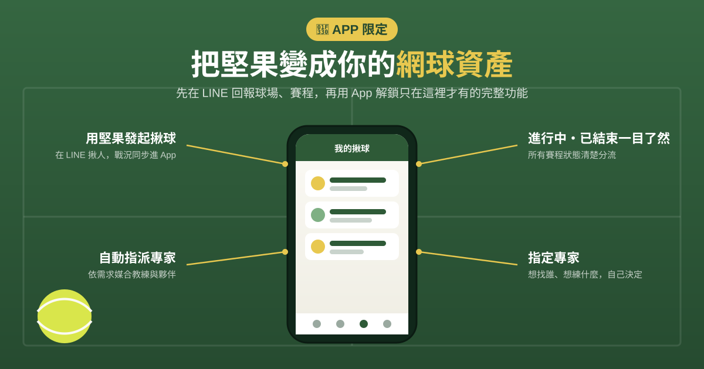

記錄每一球，
連結每一場
回報球場、累積堅果、向專家提問。
和球友一起更新球場狀況，用貢獻換取專業網球建議。

加入 LINE 回報球場、累積堅果，還有不定時專家分享；想要專家專屬問答與進階功能，再申請 App 限量測試
🌰 也想搶先體驗 App？申請限量測試 → 🗺️ 先看網球場地圖 →
回報球場、累積堅果、向專家提問。
和球友一起更新球場狀況，用貢獻換取專業網球建議。
加入 LINE 回報球場、累積堅果，還有不定時專家分享；想要專家專屬問答與進階功能，再申請 App 限量測試
🌰 也想搶先體驗 App？申請限量測試 → 🗺️ 先看網球場地圖 →從想打球到打完，Tennis Nut 一路都在。
出門前先看能不能打
順手回報，30 秒
每次貢獻都長出堅果
用堅果解鎖專業建議
把這場變成回憶
護照收成就，越打越強
🌰 Tennis Nut 最大的不同
不只問球技，也能問訓練、恢復與營養。用堅果點數，把日常打球遇到的問題交給合適的專家。
技術・戰術・比賽策略
核心・腳步・爆發力
痠痛・恢復・傷害預防
賽前飲食・補水・恢復
＊專家提供的是訓練與恢復方向的建議，協助你判斷該休息或訓練，並非醫療診斷或治療。身體不適請就醫。

把練習、比賽和拜訪球場，一鍵做成專屬圖卡。
不只是紀錄分數，也留下你這次上場的狀態與回憶。
收藏你的網球日常，分享給球友或社群。


Tennis Nut 陪你留下練習、比賽、裝備與球場拜訪紀錄；也透過球友們的場地回報，幫助更多新進球友找到適合自己的球場。
遇到技術、體能、恢復或比賽心理上的瓶頸時，也能用堅果點數向專家提問，讓每一次練習都有更清楚的方向。
🌰 想搶先體驗 App？申請限量試用 →